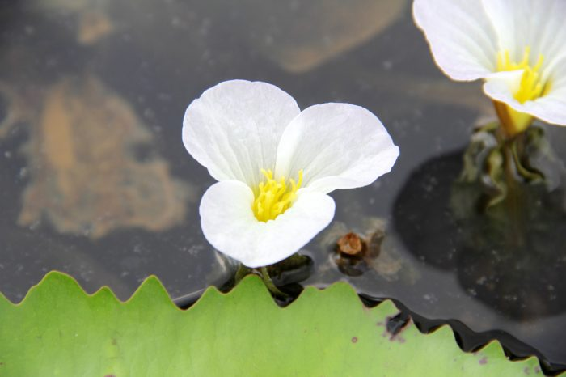

पानी केलाDuck Lettuce
Ottelia alismoides · Hydrocharitaceae · FLR-0258

- Scientific name वैज्ञानिक नाम
- Ottelia alismoides (L.) Pers.
- Family कुल
- Hydrocharitaceae
- Hindi हिंदी
- पानी केला
- Local names स्थानीय नाम
- pani kela, paani kela, duck lettuce, ottelia
- Status here यहाँ की स्थिति
- native
- Movement आवागमन
- Resident, here all year
- Known from कहाँ दर्ज
- Others have published records from the wider Awadh–Purvanchal plain, none yet from Basti–Ayodhya अवध–पूर्वांचल से दूसरों के प्रकाशित अभिलेख, बस्ती–अयोध्या से अभी नहीं
- IUCN IUCN
- not evaluated
- Review समीक्षा
- audited and independently read
When to look कब देखें
Present all year. साल भर मौजूद।
Uses and possibilities उपयोग और संभावनाएँ
Drawn from the documented uses in the profile below, where each is labelled traditional, current or a research lead. All uses →
Tell it apart from इनसे अलग पहचानें
पानी केला / Duck Lettuce
Ottelia alismoides (L.) Pers. — Hydrocharitaceae
पानी केला — पूर्वी उत्तर प्रदेश के तालाबों और धीमी गति वाली नहरों में उगने वाला एक जलीय पौधा जिसकी पत्तियाँ तैरती हुई दिखाई देती हैं। इसकी पत्तियाँ कमल की पत्तियों की तरह दिखती हैं, पर छोटी होती हैं। इसके छोटे-छोटे गुलाबी या सफेद फूल पानी की सतह पर खिलते हैं। यह पानी को स्वच्छ रखने में मदद करता है।
Quick Identification त्वरित पहचान
| Feature | Description |
|---|---|
| Growth habit | Aquatic herb; rosette form; leaves on the water surface |
| Leaves | Round to oval, 5–15 cm diameter; floating or emergent; waxy coating (hydrophobic) |
| Leaf margin | Entire or slightly wavy |
| Flowers | Small, pink or white, three-petaled; solitary; on long flower stalks above water |
| Roots | Spreading, anchor the plant in mud |
| The test | Rounded floating leaves with pink flowers above water; no mistaking it |
Field tip: Look for small rosettes of round floating leaves with delicate pink or white three-petaled flowers on long stalks, in shallow water of ponds and slow canals.
Morphology आकारिकी
Biometrics (typical measurements in the Gangetic plain):
| Measurement | Range |
|---|---|
| Leaf diameter | 5–15 cm |
| Flower diameter | 15–20 mm |
| Flower stalk length | 5–30 cm |
| Plant spread | 10–50 cm |
Roots: Fibrous roots anchoring the plant in mud; absorb nutrients from sediment.
Leaves: Simple, rosette arrangement; round to oval, with entire or slightly crenate margins. The upper surface is green, often with a waxy coating providing hydrophobic (water-repellent) properties. Venation is radial from the petiole insertion.
Flower stalks: Elongate, flexible; adjust to water level changes.
Flowers: Bisexual, three-petaled (or occasionally more); pink, white, or pale purple. The flowers open briefly in the morning and close by afternoon.
Fruit: A capsule; seeds are small and numerous.
हिंदी: गोल पत्तियाँ, पानी पर तैरती हुई। गुलाबी फूल ऊपर आते हैं। पत्तियों पर पानी की बूँदें नहीं ठहरतीं।
Behaviour & Ecology व्यवहार और पारिस्थितिकता
Ottelia alismoides is a freshwater aquatic plant native to tropical Asia and Africa. It thrives in shallow, nutrient-rich waters. The plant provides oxygen to the water through photosynthesis and creates microhabitats for small aquatic fauna. The flowers are pollinated by insects that land on the floating petals.
हिंदी: तालाब के पानी को साफ रखता है। छोटे जलीय जीवों को छिपने की जगह देता है। सूरज की रोशनी में फूल खिलते हैं।
Life Cycle / Phenology जीवन चक्र
| Month / season | Event |
|---|---|
| Year-round | Vegetative growth; forms new rosettes |
| June–November | Flowering (peak August–September) |
| October–January | Seed maturation and dispersal |
Perennial; propagates both by seed and vegetative stolons.
हिंदी: साल भर बढ़ता है। अगस्त-सितंबर में सबसे ज़्यादा फूल। बीज नवंबर में पकते हैं।
Associated Species / Interactions संबंधित प्रजातियाँ
- Pollinators: Small insects and bees visit the flowers.
- Associated fauna: Small fish and aquatic invertebrates shelter among the leaves.
Pests and Diseases कीट और रोग
- Fungal leaf spots in humid seasons (minor).
- Generally disease-resistant.
Agricultural / Human Relevance कृषि प्रासंगिकता
Duck Lettuce has little direct economic use in eastern UP. However, it is valued locally for its role in maintaining water quality in village ponds and providing shade and shelter for aquatic life. It is sometimes collected as green matter for composting.
Expected Locally स्थानीय रूप से अपेक्षित
Not a field record. Written from published accounts for eastern Uttar Pradesh. No confirmed local sighting yet — if you have seen it, that is what the atlas needs.
अभी तक स्थानीय पुष्टि नहीं। यह विवरण प्रकाशित स्रोतों से है, किसी अवलोकन से नहीं।
Duck Lettuce is to be expected in shallow ponds, lakes, and slow-flowing canals throughout Basti district, particularly during the monsoon and early post-monsoon season when water levels are higher. GBIF holds published records from the wider Awadh–Purvanchal plain. The plant is most visible when flowering (August–November). A first confirmed local record would be a photograph showing the floating rosettes and pink flowers with place and date.
Distribution वितरण
Global range: Tropical Asia and Africa; pantropical in distribution.
In India: Widespread in freshwater wetlands throughout the country.
In Uttar Pradesh: Common in ponds, tanks, and slow rivers.
In Basti district / eastern UP: Found in village ponds and irrigation tanks; likely abundant but under-recorded.
Research Questions शोध प्रश्न
Anyone can investigate these | कोई भी इन प्रश्नों की जाँच कर सकता है
- How many duck lettuce plants are in a village pond, and how much area do they cover? / एक तालाब में कितने पानी केले की पत्तियाँ हैं? — Map the pond; estimate plant density.
- What insects visit the flowers, and at what times of day? — Observe for several hours each morning; record species and behaviour.
- How deep can the leaf stalks extend to maintain the floating habit? — Measure water depth and stalk length in different areas.
- Does the water under duck lettuce plants have higher oxygen levels than open water? — Measure dissolved oxygen with a meter.
- What small aquatic animals shelter among the leaves? / पत्तियों में कौन-कौन से जलीय जीव रहते हैं? — Collect leaves gently; inspect for fauna with a hand lens.
Similar Species मिलती-जुलती प्रजातियाँ
| Species | How to tell apart | हिंदी |
|---|---|---|
| Indian Lotus (Nelumbo nucifera) | Much larger leaves (20–40 cm); leaf has a slit to the centre; pink or white flowers stand above water | कमल — बहुत बड़ी पत्ती, बीच में सीधा काट |
| Water Lettuce (Pistia stratiotes) | Wedge-shaped velvety leaves; white flowers hidden in rosette centre; invasive | जलपत्ता — पत्ता पच्चर के आकार का, मखमली |
| Water Hyacinth (Pontederia crassipes) | Much larger plant; swollen leaf stalks; showy violet flower spikes | जलकुंभी — सूजे हुए डंठल, बैंगनी फूल |
Field rule: Small round floating leaves with delicate pink or white three-petaled flowers on long stalks is Ottelia alismoides.
Taxonomy & Classification वर्गीकरण
Original description. The species was originally described by Linnaeus as Stratiotes alismoides in 1753 in Species Plantarum. It was transferred to Ottelia by Christian Hendrik Persoon in 1807. The genus name Ottelia honors Jean-Etienne Ottelier, a French botanist.
Subspecies. Monotypic — no subspecies are currently recognised.
Family and order placement. Order Alismatales, family Hydrocharitaceae (waterweed family).
Phylogenetic notes. Ottelia is closely related to genera like Hydrocharitan and Lagarosiphon.
IUCN status rationale. Not evaluated. Widespread in freshwater habitats; no conservation concerns.
Photo Gallery फोटो गैलरी
Photos needed आवश्यक फोटो
- [ ] Rosette of floating leaves in pond (पानी केले की पत्तियाँ)
- [ ] Pink flowers above the water surface (फूल)
- [ ] Cross-section showing floating and rooting parts (पूरा पौधा)
- [ ] Pond scene with multiple plants (तालाब में)
No photos yet — add field photos to media/species/duck_lettuce/ and run node scripts/sync_photos.js.
References संदर्भ
- Linnaeus, C. (1753). Species Plantarum. Vol. 1, p. 288. Laurentii Salvii, Holmiae. [as Stratiotes alismoides]
- Persoon, C.H. (1807). Synopsis Plantarum, Vol. 1, p. 347. Treuttel & Würtz, Paris.
- Cook, C.D.K. (1996). Aquatic and Wetland Plants of India. Oxford University Press, Oxford.
- Hooker, J.D. (1894). Flora of British India, Vol. 6. L. Reeve, London.
- Botanical Survey of India — Flora of Uttar Pradesh.
- GBIF Occurrence Data — Ottelia alismoides, Uttar Pradesh (2010–2025).
Source file: species/flora/aquatic/duck_lettuce.md